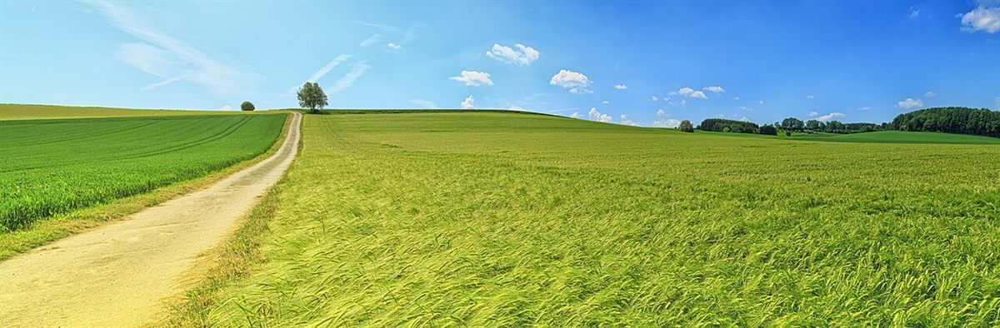
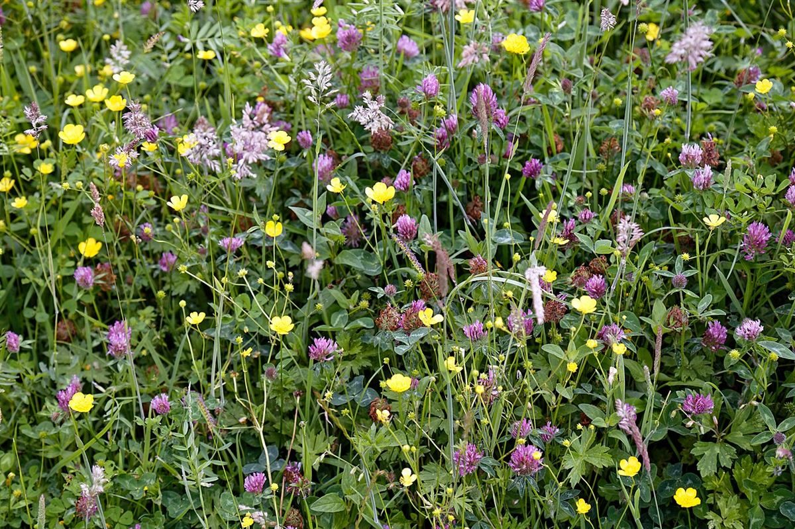

ひとつ目の石
店のこと
お店について確認できているのは、所在地とInstagramのアカウントだけです。
「想像してみる」の部分は、制作側が想像して書いたものです。お店の実際の様子・考え・メニューとは関係がありません。
確認できていること
- 店名は「四国カルスト 風の丘」、業種はカフェ
- 所在地は愛媛県西予市野村町大野ケ原260(〒797-1434)
- 電話番号はなし。連絡はInstagramから
- 営業時間・定休日・メニュー・価格・ご予約・駐車場は準備中

想像してみる
「風の丘」という名前から
由来は分かりません。制作側は、見晴らしのよい高い場所で、風を感じながら一息つくお店かもしれない、と想像しました。窓の外には草の丘が広がり、雲がゆっくり流れていく。そんな時間を思い浮かべています(実際のお店の姿ではありません)。


